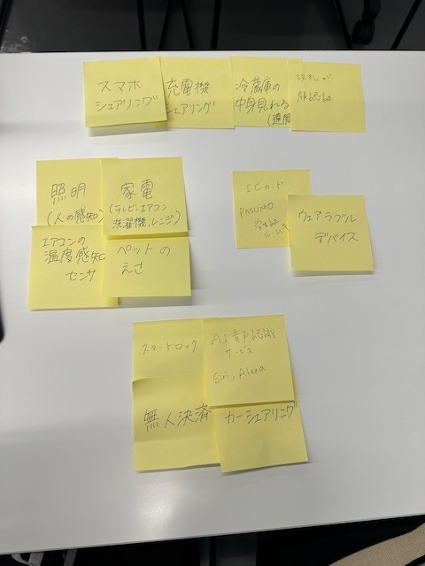
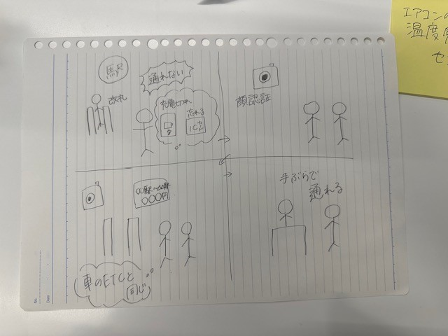

第1回
IoTに関して
１．IoTとは
IoTは、"Internet of Things"（モノのインターネット）の略で、インターネットに接続された様々なデバイス
（センサーやアクチュエーターなど）が相互に通信し、データを共有することで、人々の生活を便利にする技術のことです。
IoTは、センサーから収集されたデータを解析し、デバイスを自動的に制御することができるため、家庭やビジネスなど、
あらゆる分野で利用されています。たとえば、スマートホームシステムでは、家電製品をリモートで制御したり、
センサーによって自動的に部屋の温度を調整することができます。また、ビジネスでは、IoTを使用して、生産プロセスを監視し、
生産効率を向上させたり、在庫管理を自動化したりすることができます。
2.Iotでなにができるか

家電
ペットの餌やりを自動でする
照明
スマートロック
カーシェアリング
無人決済
AI音声認識サービス
ウェアラブルデバイス
ICカード
これを進化させてかんがえたものが
スマホシェアリング、充電器シェアリング、冷蔵庫の中身が見える、改札が顔認証
3.IoTに関して自分たちで考えたアイデア

ICカードがなかったり、スマホの充電が切れていても、顔認証で改札を通ることができる。
車のETCのように利用料金が表示され、あとから料金を請求される仕組みになる。